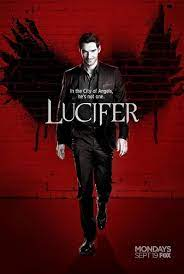

Top 5 Series
Passada na década de 1980, na cidade fictícia de Hawkings, Stranger Things conta a história de um garoto que desaparece misteriosamente e dos eventos paranormais que se passam em torno desse acontecimento.

A série gira em torno de Jake Peralta (Andy Samberg), um imaturo, mas talentoso, detetive da polícia de Nova York na fictícia 99. ª Delegacia do Brooklyn, que muitas vezes entra em conflito com seu novo comandante, o sério e severo capitão Raymond Jacob Holt (Andre Braugher).
Peaky Blinders é uma série da BCC em parceria com a Netflix que totaliza seis temporadas e discorre sobre a história de uma gangue de criminosos na Inglaterra de 1919. O drama é baseado na história de uma gangue real de mesmo nome, que se encontrou ativa na cidade de Birmingham depois da Primeira Guerra Mundial.

Walter White é um professor de química de ensino médio diagnosticado com câncer no pulmão adenocarcinoma no estágio III, e passa a produzir metanfetamina para garantir o futuro financeiro de sua família. Com o progresso do seu negócio, Walter ganha uma reputação notória utilizando o pseudônimo Heisenberg.

Lucifer Morningstar (Tom Ellis), o famigerado Senhor do Inferno, se cansa da vida demoníaca que leva no subterrâneo e abandona seu trono para tirar férias em Los Angeles. Lá, ele abre uma casa noturna chamada "Lux" e passa a desfrutar de tudo o que mais gosta: vinho, mulheres e excessos.
